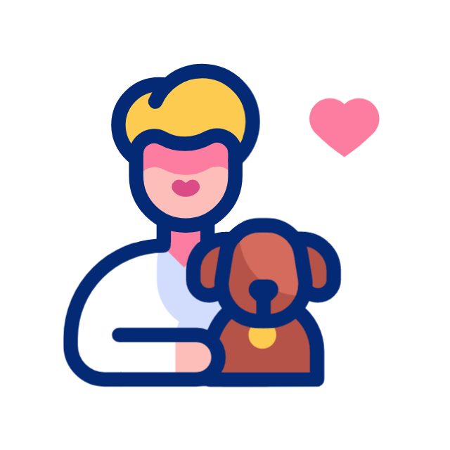

🐾 Presença na Cerimónia
O teu cão pode participar na cerimónia — seja a acompanhar os noivos ao altar, a receber os convidados, ou apenas a estar presente nos momentos que mais importam. O handler garante que tudo corra na perfeição.


O teu dia mais especial, com o teu melhor amigo. Ficamos responsáveis pelo teu cão para que possas viver cada momento do casamento sem uma única preocupação.

💍 Disponível para cerimónias e receções, ao longo de todo o dia.

O teu cão pode participar na cerimónia — seja a acompanhar os noivos ao altar, a receber os convidados, ou apenas a estar presente nos momentos que mais importam. O handler garante que tudo corra na perfeição.
Os casamentos são dias intensos e cheios de emoções. Com a nossa equipa a tomar conta do teu cão, podes dançar, chorar de alegria e saborear cada segundo — sabendo que o teu melhor amigo está em boas mãos.
Coordenamos com o fotógrafo do casamento para garantir que o teu cão aparece nas fotos mais especiais. Ao longo do dia, enviamos também vídeos e fotos exclusivas para teres sempre tudo registado.
Quanto mais cedo nos contactares, melhor conseguimos preparar tudo. Recomendamos marcar com pelo menos 4 semanas de antecedência para garantir disponibilidade e tempo para a reunião preparatória.
Sim! O teu cão pode participar ativamente na cerimónia — desde acompanhar os noivos até simplesmente estar presente. O nosso handler assegura que tudo decorre de forma tranquila e organizada, sem perturbar o momento.
Sim. Tratamos da recolha do teu cão em casa, do transporte para o local do evento e da devolução no final. Tudo planeado com antecedência para que não tenhas de te preocupar com nada.
Durante o jantar e a festa, o handler mantém o teu cão confortável e entretido — com passeios, brincadeiras e momentos de descanso. Se o teu cão ficar cansado ou agitado, tratamos de o levar para casa no momento mais adequado.
Recomendamos um mínimo de 4 semanas de antecedência para garantir disponibilidade. Quanto mais cedo contactares, mais tempo temos para conhecer o teu cão e preparar o plano perfeito para o grande dia.
Operamos principalmente na área de Lisboa e Sintra. Para casamentos noutras regiões, fala connosco — analisamos caso a caso e tentamos sempre encontrar uma solução.
Claro! O handler envia-te fotos e vídeos ao longo do evento para que estejas sempre a par. Também coordenamos com o fotógrafo do casamento para garantir que o teu cão é imortalizado nos momentos mais especiais.
ou então